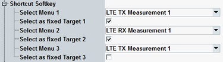

Shortcut Configuration
This section configures the three shortcut softkeys that provide a fast way to switch to selectable measurements.
See also "Using the Shortcut Softkeys".

Shortcut configuration
Selects a measurement. The corresponding shortcut softkey opens a dialog presenting this measurement as default target or uses the measurement as fixed target.
Configures and renames the corresponding shortcut softkey.
- Enabled: The softkey directly opens the measurement selected via "Select Menu".
- Disabled: The softkey opens a dialog box for selection of the target measurement.